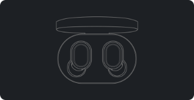
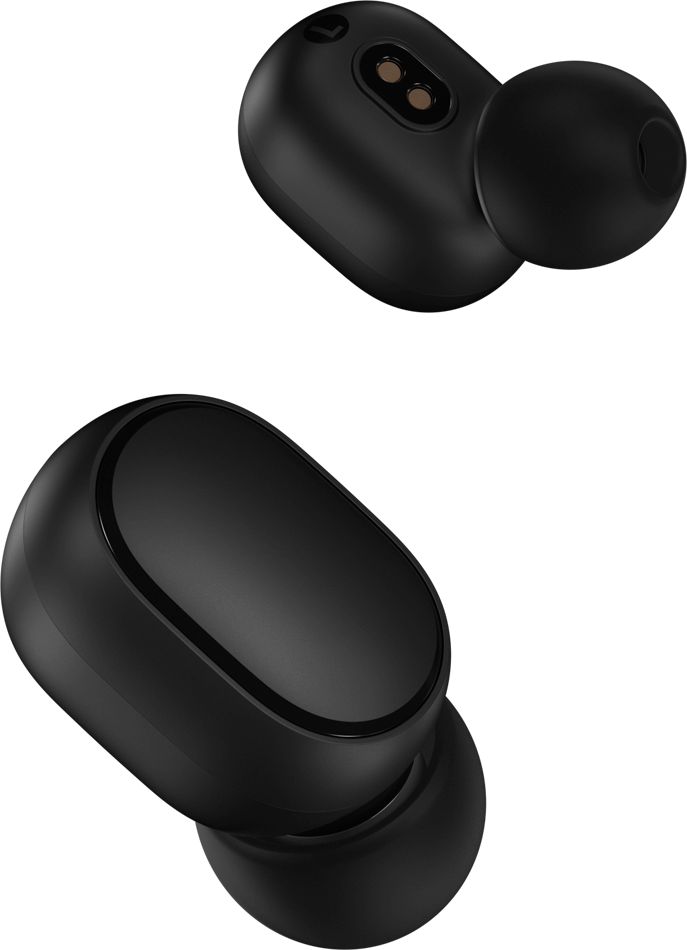

Mi True Wireless Earbuds Basic 2
Bluetooth 5.0, conexão instantânea
Conexão instantânea
Conexão automática em apenas alguns segundos
Bluetooth 5.0
Nova tecnologia bluetooth com conexões mais rápidas e estáveis
Bateria de até 12hrs
Reproduz até 12 horas de músicas com seu estojo de carregamento
4,1g
Máximo conforto e várias opções de ajustes
Proteção contra toques acidentais
Controle músicas e chamadas com botões de fácil acesso
Controle por voz
Suporta diversos assistentes de voz
Nova experiência sem fio.
Conecte automaticamente em segundos.
A conexão dos fones está ainda mais simples.
Basta colocar os fones no ouvido e aguardar a conexão
Tutorial para conectar
 Clique para assistir o videoPrimeira conexão
1. Retire os dois fones da caixa para ligar automaticamente.
2. Atualize o Bluetooth do smartphone, retire o fone direito e emparelhe com o dispositivo: Mi True Wireless Earbuds Basic 2. Em seguida, retire o fone da esquerda para conectar automaticamente.
** Coloque o fone de ouvido no estojo de carregamento e aguarde a acendimento do led vermelho. Ele será desconectado e, ao retirar o fone de ouvido do case, ele será reconectado automaticamente
Como resetar o fone de ouvido
1. Mantenha pressionados os botões dos dois fones por 15 segundos até que as luzes vermelha e branca pisquem alternadamente por 3 vezes antes de apagar. Pronto, o fone foi resetado.
2. No smartphone, na lista de dispositivos bluetooth, esqueça o dispositivo Mi True Wireless Earbuds Basic 2
Um fone de ouvido compacto com chip embutido. Nova geração de Bluetooth 5.0, ainda mais rápido e mais estável.
O earbuds possui um chip Bluetooth 5.0 embutido, e se enquadra na nova geração de fones de ouvido. A taxa de transmissão de dados é cinco vezes maior em comparação com a geração anterior. A conexão é mais rápida e ainda mais estável, perfeito para ouvir suas músicas.
Reprodução de música é bem equalizada sem ruídos ou chiados durante as ligações. Driver de áudio de 7,2 mm e redução de ruído do ambiente inteligente DSP.
Quando o material e a sintonia são os mesmos, quanto maior o tamanho do alto-falante, melhor a baixa frequência. O Mi True Wireless Earbuds Basic 2 está equipado com uma unidade de som de 7,2 mm. Por trás do design compacto, há ainda a tecnologia DSP de redução de ruído , então você não precisa se preocupar com a qualidade de som durante as chamadas.
Apenas 4,1g e acompanha três borrachas para diferentes usuários. Confortável para uso contínuo e para não cair do seu ouvido.
Leve, compacto e confortável, é como resumimos os Earbuds. Acompanham três modelos de borrachas para diferentes tamanhos de ouvido. O fone foi projetado para se fixar em sua orelha mesmo durante a prática de exercícios físicos que exigem muito movimento.
Apenas 4,1g e acompanha três borrachas para diferentes usuários. Confortável para uso contínuo e para não cair do seu ouvido.
Leve, compacto e confortável, é como resumimos os Earbuds. Acompanham três modelos de borrachas para diferentes tamanhos de ouvido.
O fone foi projetado para se fixar em sua orelha mesmo urante a prática de exercícios físicos que exigem muito movimento.
Botões que evitam toques acidentais, clique para controlar músicas, chamadas e acionar o assistente de voz



Habilidades ocultas do Earbuds: encontre seu smartphone, abra o navegador, envie uma mensagem por voz, tire fotos e muito mais.
Para ativar o assistente de voz é simples: basta pressionar o botão multifuncional do fone de ouvido duas vezes e está pronto para uso. Você pode se concentrar em dirigir e solicitar uma rota pelo assistente.